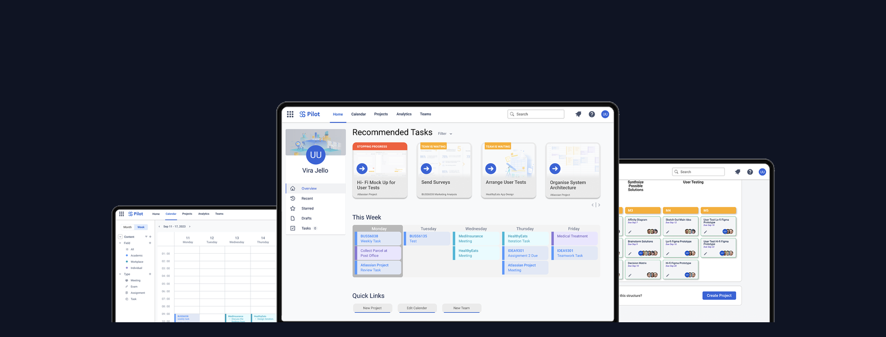
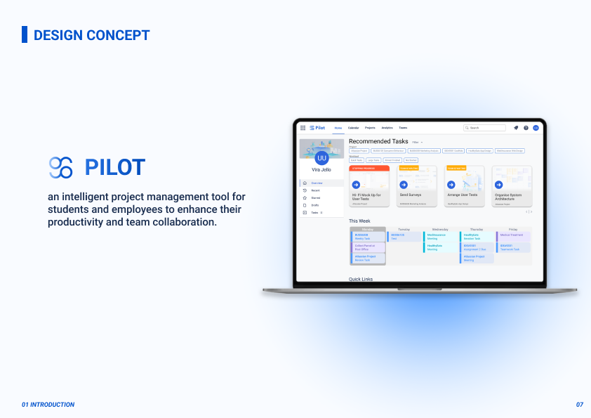
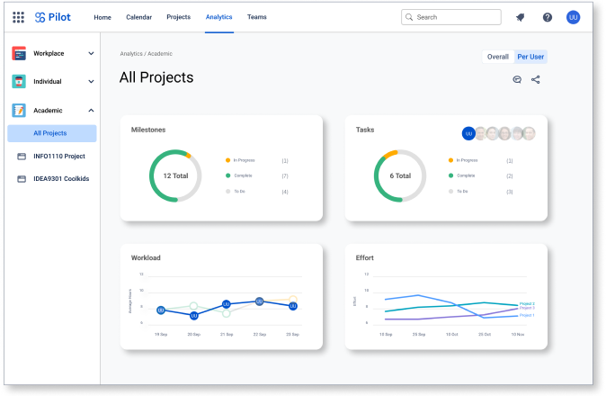
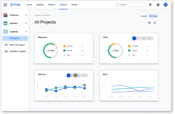

Pilot: Bridging the Gap Between University and Work
A live industry brief from Atlassian: design an intelligent, AI-powered project management tool for students and new employees — from research to a tested, high-fidelity prototype presented to Atlassian's product and design team.

The problem
Atlassian wanted to expand into a younger demographic — students and early-career employees — at a time when they were launching Atlassian Intelligence, their AI assistant, across the product suite. The challenge: no existing tool served both contexts. Students were stitching together Google Drive, Canvas, Discord, and WhatsApp to manage work, while professionals used entirely different stacks. The transition between the two was a gap nobody had designed for.
Brief: Design an intelligent project management tool for students and new employees that enhances productivity and team collaboration, sitting within the Atlassian ecosystem.
Process
Discover
Define
Ideate
Prototype
Test
User research surfaced five clear signals: 95% of participants wanted one tool to handle all task types, 86% named task and time management as their biggest pain point, 80% wanted more engaging project tools, 75% wanted better group communication, and 70% wanted more efficient software overall. Competitor analysis covered direct tools (Asana, Notion, Monday.com), non-direct references (GitHub, Figma, Canva), and the tools students were already using — confirming that none bridged both student and employee contexts.
Three "how might we" questions shaped the direction: adapt the experience to personal needs, help users allocate time more accurately, and keep users engaged. These led to three design opportunities: personalised productivity enhancement, engagement through seamless integration, and contextual collaboration boost. From there, two rounds of Hi-Fi prototyping and three rounds of user testing refined the design before the final presentation to Atlassian.
My role
I was one of four UX/UI designers on the project. I owned the research synthesis, ran ideation sessions (Crazy 8s, group brainstorming, decision matrix), and led the design of two core flows: the AI project creation model and the notification system. I contributed to all three design iterations and co-presented the final prototype to Atlassian's product and design team.
Solution
Pilot is an intelligent project management tool that organises work across academic, workplace, and personal contexts in one interface. The homepage surfaces AI-recommended priority tasks across all active projects, so users see what matters most regardless of which project it belongs to. A calendar with built-in availability detection suggests meeting times and resolves clashes proactively — presenting alternatives rather than just surfacing conflicts.

The standout feature is the AI project scaffold: users paste in a brief and Pilot generates a full task structure broken down by milestone across weeks. A notification system lets users request help from teammates without leaving the app — replacing the WhatsApp thread. Premium analytics give teams a per-user view of milestones, workload, and effort across all projects.
Every design decision was made within Atlassian's existing component language, so Pilot feels like a natural part of the ecosystem rather than a standalone student project.


Impact
3
Rounds of user testing across the design process
86%
Said the prototype successfully responded to the design concept
82%
Rated Pilot adaptable across uni, workplace, and personal life
Both satisfaction metrics improved consistently across all three testing rounds. The prototype was presented to Atlassian's product and design team at the end of the brief. The AI project scaffold was called out as the standout differentiator — addressing a gap none of Atlassian's existing products currently fill.